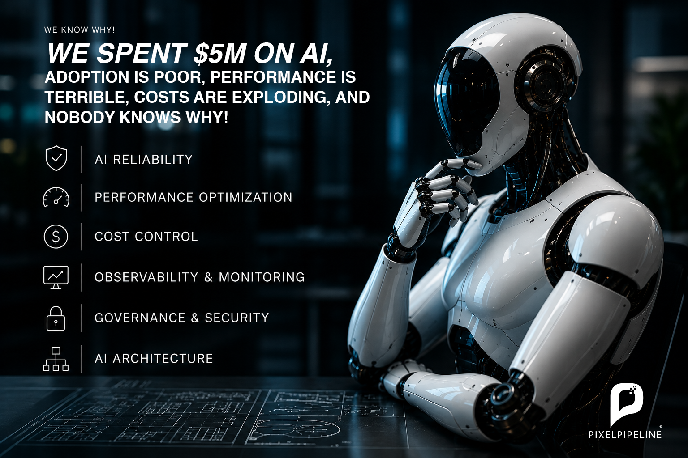

Stop Building AI Prototypes. Start Running Production AI.

Transition your fragile generative AI experiments into high-performance, secure, and fully governed enterprise systems. We specialize in AI latency optimization, guardrail implementation, and production stabilization for large-scale operations.
Your LLMs are in Production. Why Are They Failing?
Building an AI application that connects to your CRM or internal databases takes a few days. Scaling it to thousands of concurrent users without breaking is an entirely different engineering reality.
Most enterprises are currently suffering from the "Prototype Trap":
- Crushing Latency: Your AI workflows take 10+ seconds to respond, making legacy keyword searches faster and more appealing to your users.
- Silent Model Drift: System updates, prompt changes, or API shifts are causing catastrophic, undetected regressions in accuracy.
- Zero Governance: Autonomous agents are running without deterministic guardrails, opening your organization to PII leaks, prompt injections, and compliance breaches.
- The "Black Box" Problem: When a complex agentic chain fails, your engineering team has no observability to pinpoint the bottleneck.
Enterprise AI Remediation & Stabilization
-
Performance & Latency Optimization
We cut LLM response times by up to 60%. By implementing advanced semantic caching, streaming protocols, and asynchronous agent orchestration, we make your AI faster than your legacy UI.
-
Deterministic Security & Guardrails
No more rogue AI. We inject strict, deterministic guardrail layers that intercept inputs and validate structural outputs, ensuring your models never break compliance or leak sensitive data.
-
AI Observability & SRE
We bring Site Reliability Engineering to generative AI. Gain complete visibility into your token spend, execution graphs, and latency bottlenecks with enterprise-grade tracing and telemetry.
-
Continuous Evaluation Pipelines
Stop guessing if your model is hallucinating. We build automated CI/CD evaluation pipelines using Golden Datasets to catch accuracy regressions and drift before your users do.
The AI Production Health Audit
Stop guessing where the bottlenecks are. Bring in a Principal AI Architect to diagnose your systems. In this highly focused 2-week engagement, we will analyze your LLM orchestration, trace your latency logs, and test your security boundaries.
What You Get:
The AI Remediation Blueprint—a brutal, honest architectural teardown of your current AI stack, complete with a prioritized engineering roadmap to fix latency, secure your data, and optimize your token costs.
Built by AI Architects (Registered Professional Engineers), Not Hype Chasers.
We don't just write prompts; we engineer resilient systems. Leveraging a deep background in software engineering, data architecture, and agentic AI, we bridge the gap between experimental AI and rigorous enterprise standards. If your AI is breaking in production, we are the ones you call to fix it.
OIQ-Licensed & Fully Insured Engineering
You aren't hiring a standard development agency; you are partnering with a regulated engineering practice. As an OIQ-registered engineer, every architectural blueprint, security guardrail, and remediation strategy we deliver is backed by mandatory professional liability insurance (Errors and Omissions). We don't just optimize your AI—we take professional accountability for its structural integrity.
Book an AI Production Health Audit